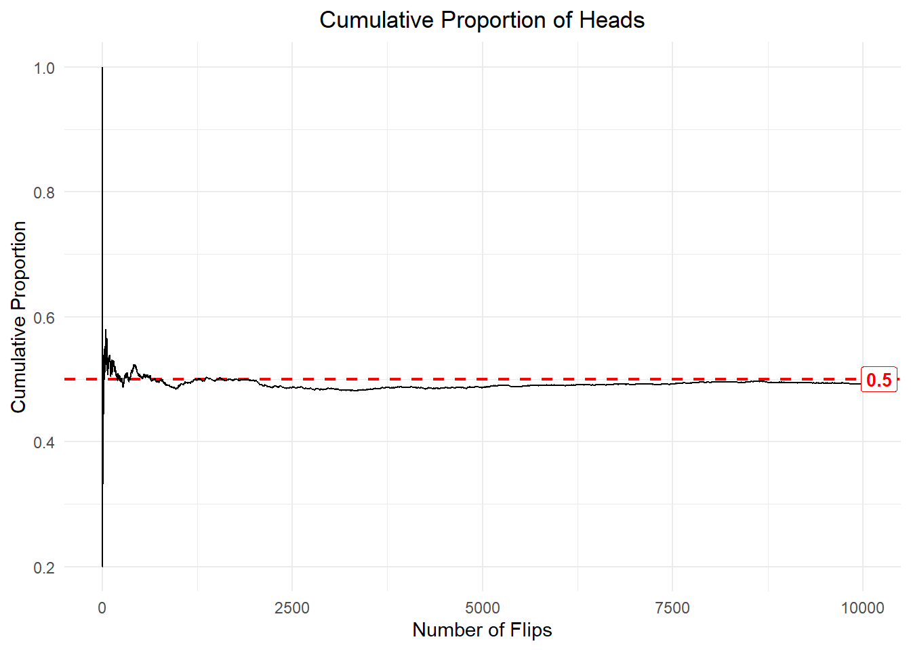

Laws of Large Numbers
The Laws of Large Numbers
As always, it can be useful to start with a plain language interpretation or heuristic. In plain English, the Laws of Large Numbers claim that “the sample average of a random experiment converges to the population mean as the number of trials increases.”
As an example, consider a fair coin flip. We would expect that on average the coin will show “Heads” (H) fifty percent of the time, and “Tails” (T) the other fifty percent of the time. But for a small sample, say ten flips, there is no guarantee that exactly five H and five T come up. Indeed, it is possible (even if unlikely) that you flip 10 straight H, or 10 straight T. Nonetheless, the Laws of Large Numbers tell us that “as we increase the number of flips to infinity, the proportion of H (and T) converges to fifty percent.”
There are two laws of large numbers which we will consider in turn; the Weak Law and the Strong Law. The general claims of each are rather similar, but there are some subtle differences which we will explore.
Weak Law of Large Numbers
Weak Law of Large Numbers:
Let \(X_1, ..., X_n\) be an i.i.d sequence of random variables with finite population mean \(\mu, \, \forall i\).
Then \(\bar{X}_n = \frac{1}{n} \sum_{i=1}^n X_i \xrightarrow{p} \mu\) as \(n \rightarrow \infty\) .
The Weak Law of Large Numbers tells us that as the sample size grows to infinity, the sample mean converges in probability to the population mean.
Strong Law of Large Numbers
Strong Law of Large Numbers:
Let \(X_1, ..., X_n\) be an i.i.d sequence of random variables with finite population mean \(\mu, \, \forall i\).
Then \(\bar{X}_n = \frac{1}{n} \sum_{i=1}^n X_i \xrightarrow{a.s} \mu\) as \(n \rightarrow \infty\) .
The Strong Law of Large Numbers tells us that as the sample size grows to infinity, the sample mean converges almost surely to the population mean.
Comparing the Two
These two results are highly related, and as the name would suggest the strong law is stronger than the weak law in the sense that it makes a “bigger” claim. As such, the proofs are a little bit different; the proof of the strong law has more work to do. We will not investigate the proofs here.
The key difference between the two is in the mode of convergence.
Recall that convergence in probability states that
\[ \forall \epsilon >0, \quad \operatorname{lim}_{n \rightarrow \infty} \operatorname{Pr}\left(|\bar{X}_n - \mu| < \epsilon\right) = 1. \]
Convergence in probability tells us about the limiting behaviour of the probability of a deviation between the sample mean and the population mean. It says that, for any arbitrarily small value of \(\epsilon\), there will exist some value of \(N\) such that for any sample size \(n > N\) the probability of the deviation between the sample mean and the population mean being within this margin, \(\epsilon\), will be arbitrarily close to \(1\). Mathematically, this exact statement is written as,
\[ \forall \epsilon > 0, \, \forall \delta > 0, \quad \exists N \, s.t. \, \forall n \geq N \quad \operatorname{Pr}\left(|\bar{X}_n - \mu| < \epsilon\right) > 1 - \delta. \]
So, for our “threshold” of \(N\) there may still be times where the deviation between the sample mean and the population mean actually does exceed our margin, \(\epsilon\), however we can be sure that by picking a larger value of the “threshold” \(N\) we can make the probability of this happening arbitrarily close to \(0\).
Recall that convergence almost surely states that
\[ \operatorname{Pr}\left(\operatorname{lim}_{n \rightarrow \infty} |\bar{X}_n - \mu\right| = 0) = 1. \]
This claim is stricter. Convergence almost surely tells us about the probability of the sample mean being equal to the population mean in the limit. Note the subtlety between the two; convergence in probability was about the limiting behaviour of the probability of a deviation, while convergence almost surely is about the probability of deviations converging to zero in the limit.
It says that, for any arbitrarily small margin, \(\epsilon\), there exists a (potentially different) value \(N\) such that whenever \(n \geq N\) any deviations between the sample mean and the population mean are within this margin, epsilon, with probability \(1\). Mathematically, this exact statement is written as,
\[ \forall \epsilon > 0, \quad \operatorname{Pr} \left(\exists N: \forall n \geq N, |\bar{X}_n - \mu| < \epsilon \right) = 1. \]
If you want the margin to be smaller, then you may need a larger “threshold”, \(N\). Unlike convergence in probability, now we are claiming that whenever \(n \geq N\) the deviations all stay within this prescribed margin. The sample mean gets arbitrarily close to the population mean, and it stays that way.
This is a stricter claim (and as you may expect the proof is a little bit more involved).